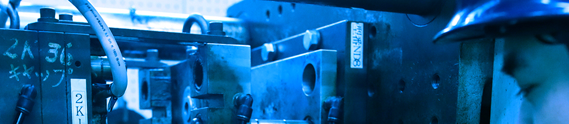
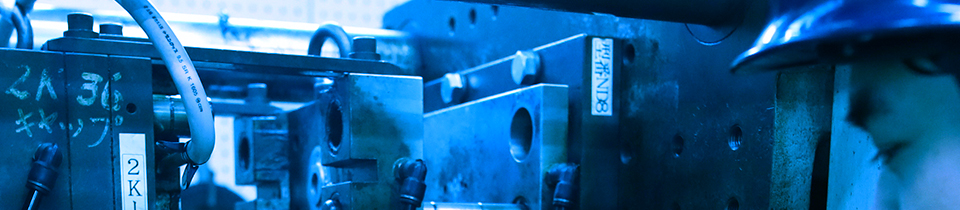
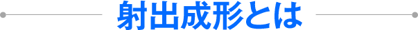
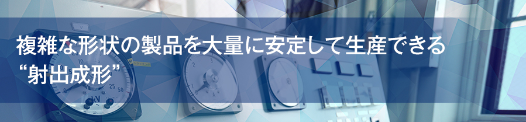
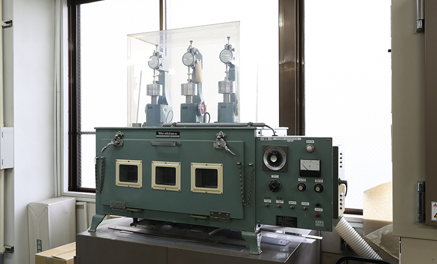

射出成形とは、加熱溶融させた材料を射出ユニットから金型内に射出注入し、冷却・固化させることで、製品を作り出す成形方法です。複雑な形状の製品でも効率よく製造することができるため、大量生産にも適しています。射出成形の工程は、大きく分けて、以下の6工程です。

- 型締め
- 材料を流し込む金型をしっかりと固定します。当社では、お客様のご要望に応じて、
金型を製造・カスタマイズすることが可能です。
- 射出
- 加熱溶融させた材料を射出ユニットから金型内に流し込みます。
射出ユニット内のスクリューの動きを調整しながら、金型内全体にしっかりと材料を充填させます。
- 保圧
- 金型内にしっかりと材料が充填されると、スクリューが射出速度の制御から圧力制御に切り替わります。
材料を押し込む形で圧力をかけていきます。
- 冷却
- 保圧が完了したら、十分に冷却を行います。冷却が十分でないと、不良品が出るだけでなく、
金型にも材料が残ってしまうため、非常に大切な工程です。
- 型開き
- 保圧・冷却が完了したら、型締めユニットを開きます。
- 製品の
取り出し - 金型から製品を取り出します。製造工程で出た不要部分に関しては、
製品取り出し時に別口から排出され、再利用されるため、材料のロスもなくすことができます。

射出成形は、高性能な機器を使えば、誰でも高品質な製品を作り出せる技法ではありません。特に当社が取り扱っている硬質塩化ビニルは、加熱温度や圧力、硬化時間などにおいて、職人による細かな調整が必要です。高性能な機械と確かな職人の技術の双方が揃って、初めて高品質な製品を作れます。